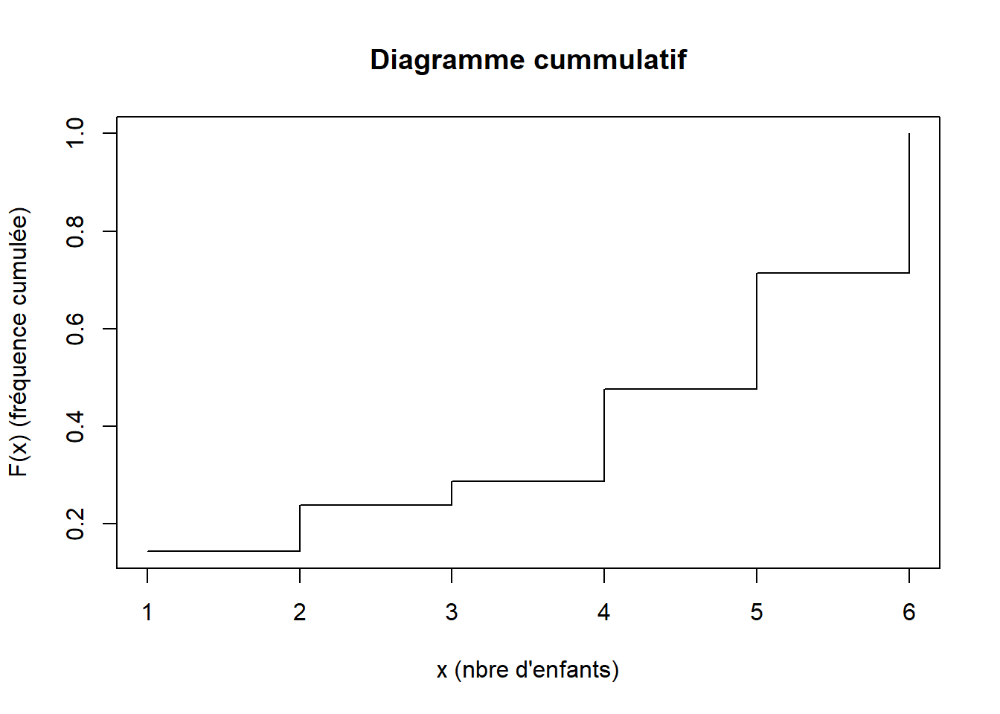
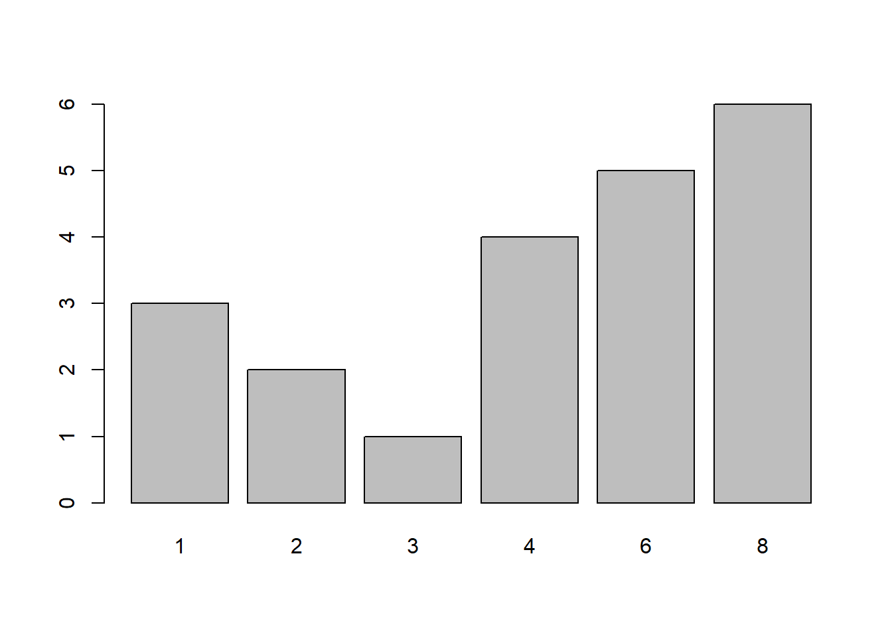
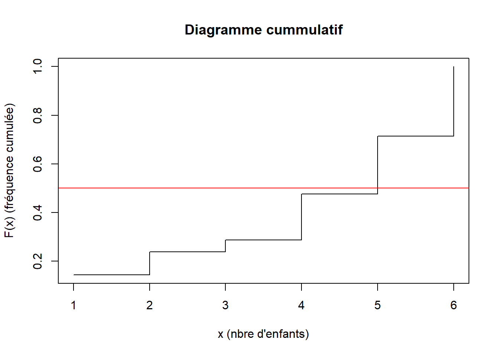

fam_ISTOM <- c(4,8,6,2,3,8,4,6,8,4,8,6,1,6,8,1,2,8,1,6,4)
eff_partiel <- table(fam_ISTOM)
eff_partielfam_ISTOM
1 2 3 4 6 8
3 2 1 4 5 6 L’effectif partiel est le nombre d’individu \(n_i\) qui ont la même valeur pour la variable étudiée.
On répertorie les familles istomiennes avec leur nombre d’enfants
fam_ISTOM <- c(4,8,6,2,3,8,4,6,8,4,8,6,1,6,8,1,2,8,1,6,4)
eff_partiel <- table(fam_ISTOM)
eff_partielfam_ISTOM
1 2 3 4 6 8
3 2 1 4 5 6 eff_partielfam_ISTOM
1 2 3 4 6 8
3 2 1 4 5 6 L’effectif cumulé d’une valeur est la somme de l’effectif de cette valeur et de tous les effectifs des valeurs qui précèdent.
On regarde toujours nos familles istomiennes
eff_partielfam_ISTOM
1 2 3 4 6 8
3 2 1 4 5 6 eff_cumul <- cumsum(eff_partiel)
eff_cumul 1 2 3 4 6 8
3 5 6 10 15 21 eff_cumul 1 2 3 4 6 8
3 5 6 10 15 21 Soit un ensemnle de \(p\) famille. L’effectif total \(N\) est donné par \[N= \sum_i^p n_i\] où \(n_i\) est l’effectif de la famille \(i\).
fam_ISTOM [1] 4 8 6 2 3 8 4 6 8 4 8 6 1 6 8 1 2 8 1 6 4eff_tot_enfants_istom <- sum(fam_ISTOM)
eff_tot_enfants_istom[1] 104La fréquence partielle d’une valeur est le rapport de l’effectif partiel de cette valeur par l’effectif total.
ici pour l’exemple des familles istomiennes
freq_part_methode_1 <- prop.table(eff_partiel)
freq_part_methode_1fam_ISTOM
1 2 3 4 6 8
0.14285714 0.09523810 0.04761905 0.19047619 0.23809524 0.28571429 freq_part_methode_2 <- eff_partiel/sum(eff_partiel)
freq_part_methode_2fam_ISTOM
1 2 3 4 6 8
0.14285714 0.09523810 0.04761905 0.19047619 0.23809524 0.28571429 en pourcentage :
freq_part_methode_2_pct <- (eff_partiel/sum(eff_partiel))*100
freq_part_methode_2_pctfam_ISTOM
1 2 3 4 6 8
14.285714 9.523810 4.761905 19.047619 23.809524 28.571429 on peut également arrondir nos résultats :
freq_part_methode_2_pct_arrondi <- round((eff_partiel/sum(eff_partiel))*100,2)
freq_part_methode_2_pct_arrondifam_ISTOM
1 2 3 4 6 8
14.29 9.52 4.76 19.05 23.81 28.57 la somme des fréquences partielles est égale à \(1\) ou \(100 \%\)
sum(freq_part_methode_1)[1] 1sum(freq_part_methode_2)[1] 1sum(freq_part_methode_2_pct)[1] 100La fréquence cumulée d’une valeur est la somme de la fréquence partiel de cette valeur et de toutes les fréquences des valeurs qui précèdent.
freq_cumul_methode_1 <- cumsum(freq_part_methode_1)
round(freq_cumul_methode_1,2) 1 2 3 4 6 8
0.14 0.24 0.29 0.48 0.71 1.00 freq_cumul_methode_2 <- cumsum(freq_part_methode_2)
round(freq_cumul_methode_2,2) 1 2 3 4 6 8
0.14 0.24 0.29 0.48 0.71 1.00 Méthode de représentation : dépend de la nature de variable (qualitative ou quantitative)
Le graphique permet de :
Diagramme en baton
barplot(eff_partiel)
Soit la fonction \[F : \mathbb{R} \to [0,1]\] \(F(x)\) : pourcentage d’individus dont la valeur du caractère \(\leq x\).
C’est la fonction de répartition du caractère \(X\)
On choisit de s’interesser au caractère fréquence cumulée.
freq_cumul_methode_1_rd <- round(freq_cumul_methode_1,3)
freq_cumul_methode_1_rd 1 2 3 4 6 8
0.143 0.238 0.286 0.476 0.714 1.000 plot(freq_cumul_methode_1_rd, type="s", main="Diagramme cummulatif", xlab="x (nbre d'enfants)", ylab="F(x) (fréquence cumulée)")
Paramètres de position fréquents :
Le maximum, le minimum
Le mode
La médiane
La moyenne
Le 1er quartile
Le 3eme quartile
Le maximum
max(fam_ISTOM)[1] 8min(fam_ISTOM)[1] 1Le mode d’une variable est la valeur qui a le plus grand effectif partiel (ou plus grande fréquence partielle). On le note \(M_0\).
Avec R, le calcul du mode d’une série statistique n’est pas direct. Cependant, il est possible de créer une fonction pour le calculer.
calcul_mode <- function(x) {
eff <- table(x)
mode <- as.numeric(names(eff[eff == max(eff)]))
return(mode)
}
calcul_mode(fam_ISTOM)[1] 8La fonction table(x) compte combien de fois chaque valeur apparaît dans le vecteur x
La fonction max(eff) permet d’extraire la valeur qui a l’effectif max
Ensuite on filtre eff afin d’avoir les valeurs ayant cette effectif max avec eff[eff == max(eff)]
On récupère le nom de la valeur qui a été filtrée avec names()
names() renvoie du texte, on doit donc convertir le résultat en nombre avec as.numeric()
fam_ISTOM [1] 4 8 6 2 3 8 4 6 8 4 8 6 1 6 8 1 2 8 1 6 4table(fam_ISTOM)fam_ISTOM
1 2 3 4 6 8
3 2 1 4 5 6 max(table(fam_ISTOM))[1] 6table(fam_ISTOM)[table(fam_ISTOM) == max(table(fam_ISTOM))]8
6 names(table(fam_ISTOM)[table(fam_ISTOM) == max(table(fam_ISTOM))])[1] "8"as.numeric(names(table(fam_ISTOM)[table(fam_ISTOM) == max(table(fam_ISTOM))]))[1] 8calcul_mode <- function(x) {
freq <- table(x)
mode <- as.numeric(names(freq[freq == max(freq)]))
return(mode)
}
calcul_mode(fam_ISTOM)[1] 8ce que l’on observait bien directement sur le diagramme en baton :
barplot(eff_partiel)
La médiane partage la série statistique en deux groupes de même effectif. On la note \(M_e\)
fam_ISTOM [1] 4 8 6 2 3 8 4 6 8 4 8 6 1 6 8 1 2 8 1 6 4median(fam_ISTOM)[1] 6Il y a autant de famille avec plus de 6 enfants que de famille avec moins de 6 enfants.
Avec la fonction de répartition précedemment présentée : \[F(M_e^-) < 0.5 < F(M_e^+)\]
freq_cumul_methode_1_rd 1 2 3 4 6 8
0.143 0.238 0.286 0.476 0.714 1.000 plot(freq_cumul_methode_1_rd, type="s", main="Diagramme cummulatif", xlab="x (nbre d'enfants)", ylab="F(x) (fréquence cumulée)")
abline(h=0.5,col="red")
On retrouve la valeur de la médiane \(M_e = 6\)
On note moyenne de \(X\), la quantité \[\bar{x} = \frac{1}{N} \sum_{i=1}^{n} n_i x_i = \sum_{i=1}^{n} f_i x_i\]
\(N\) : l’effectif total
\(n_i\) : l’effectif partiel
\(f_i\) : la fréquence partiel
\(x_i\) : le nombre d’enfant de la famille \(i\)
mean(fam_ISTOM)[1] 4.952381Le 1er quartile, noté Q1, est la valeur qui sépare le premier quart du reste de la distribution.
Le 3eme quartile, noté Q3, est la valeur qui sépare le dernier quart du reste de la distribution.
fam_ISTOM [1] 4 8 6 2 3 8 4 6 8 4 8 6 1 6 8 1 2 8 1 6 4quantile(fam_ISTOM, 0.25) # Premier quartile (25%)25%
3 quantile(fam_ISTOM, 0.75) # Troisième quartile (75%)75%
8 summary(fam_ISTOM) Min. 1st Qu. Median Mean 3rd Qu. Max.
1.000 3.000 6.000 4.952 8.000 8.000 min(fam_ISTOM)[1] 1quantile(fam_ISTOM, 0.25) 25%
3 median(fam_ISTOM)[1] 6mean(fam_ISTOM)[1] 4.952381quantile(fam_ISTOM, 0.75)75%
8 max(fam_ISTOM)[1] 8Tramway Ligne C - Roseraie → Belle-Beille Campus
Données :
LigneC_arret <- c('Roseraie','Jean Vilar','Jean XXIII','Bamako','Strasbourg','La Fayette','Les Gares','Foch-Haras','Foch-Maison Bleue','Ralliement','Molière','Doutre','Le Quai','Farcy','Élysée','Patton','La Barre','Beaussier','Belle-Beille Campus')
LigneC_arret [1] "Roseraie" "Jean Vilar" "Jean XXIII"
[4] "Bamako" "Strasbourg" "La Fayette"
[7] "Les Gares" "Foch-Haras" "Foch-Maison Bleue"
[10] "Ralliement" "Molière" "Doutre"
[13] "Le Quai" "Farcy" "Élysée"
[16] "Patton" "La Barre" "Beaussier"
[19] "Belle-Beille Campus"LigneC_kms <- c(9,8.6,8.1,7.6,7.0,6.5,6.1,5.6,5.0,4.3,3.7,2.8,2,1.6,1.1,0.7,0.5,0.1,0)
LigneC_kms [1] 9.0 8.6 8.1 7.6 7.0 6.5 6.1 5.6 5.0 4.3 3.7 2.8 2.0 1.6 1.1 0.7 0.5 0.1 0.0data.frame(LigneC_arret, LigneC_kms) LigneC_arret LigneC_kms
1 Roseraie 9.0
2 Jean Vilar 8.6
3 Jean XXIII 8.1
4 Bamako 7.6
5 Strasbourg 7.0
6 La Fayette 6.5
7 Les Gares 6.1
8 Foch-Haras 5.6
9 Foch-Maison Bleue 5.0
10 Ralliement 4.3
11 Molière 3.7
12 Doutre 2.8
13 Le Quai 2.0
14 Farcy 1.6
15 Élysée 1.1
16 Patton 0.7
17 La Barre 0.5
18 Beaussier 0.1
19 Belle-Beille Campus 0.0Objectif : trouver un lieu de RDV le long de la ligne C qui minimise le trajet de tous !
Notations :
\(A_i\) : arret \(i\) (l’arret \(A_4\) est Bamako)
\(x_i\) : distance de l’arrêt \(i\) au terminus (\(x_4 = 7.6\))
\(P\) : point de RDV
\(p\) : distance entre le point de RDV et le terminus
Première idée : Placer le point de RDV au milieu de ligne C
\[p=\frac12 \left(x_{min} + x_{max}\right)\]
p1 <- 0.5*(max(LigneC_kms)+min(LigneC_kms))
p1[1] 4.5Si la répartitions est à peu près symétrique, pourquoi pas, autrement …
Trouver \(D\) revient à trouver la mediane !
Deuxième idée : On choisi de placer le point de RDV sur l’arret du milieu, au Ralliement (\(x_{10}\)). Donc
RalliementRalliementLa distance totale parcourue pour rejoindre \(P\) est :
\[\begin{align*} D =& \sum_{i=1}^{19} \ |p-x_i| \\ =& \sum_{i=1}^{9} \ |p-x_i| + |p-x_{10}| + \sum_{i=11}^{19} \ |p-x_i| \end{align*}\]
D’où
\[\begin{align*} D =& \sum_{i=1}^{9} \ |x_{10}-x_i| + \sum_{i=11}^{19} \ |x_{10}-x_i| \\ =& |x_{1}-x_{19}| + |x_{2}-x_{18}| + |x_{3}-x_{17}| + |x_{4}-x_{16}| \\ &+ |x_{5}-x_{15}| + |x_{6}-x_{14}| + |x_{7}-x_{13}| + |x_{8}-x_{12}| \\ &+ |x_{9}-x_{11}| \end{align*}\]
On choisi de placer \(P\) entre Foch-Maison Bleue (\(x_{9}\)) et Ralliement (\(x_{10}\)). On a
\[\begin{align*} D =& |x_{1}-x_{19}| + |x_{2}-x_{18}| + |x_{3}-x_{17}| + |x_{4}-x_{16}| \\ &+ |x_{5}-x_{15}| + |x_{6}-x_{14}| + |x_{7}-x_{13}| + |x_{8}-x_{12}| \\ &+ |x_{9}-x_{11}| + |c-x_{10}| \end{align*}\]
Un terme en plus \(|p-x_{10}|\)
Même observation si on place \(P\) entre Ralliement (\(x_{10}\)) et Molière (\(x_{11}\))
Chercher la valeur de \(p\) afin de minimiser \(D\) revient à chercher la médiane de cette série statistique.
La moyenne quant à elle est la valeur de \(p\) qui permet de minimiser \[\sum_{i=1}^{19} \left(p-x_i\right)^2\]
Les indicateurs de dispersion usuels sont :
L’étendue / L’intervalle des valeurs possibles
L’écaart moyen absolu
La variance et l’écart type
L’écart inter-quartiles
library(palmerpenguins) #charge un jeu de données nommé 'penguins'Warning: package 'palmerpenguins' was built under R version 4.4.2head(penguins) # A tibble: 6 × 8
species island bill_length_mm bill_depth_mm flipper_length_mm body_mass_g
<fct> <fct> <dbl> <dbl> <int> <int>
1 Adelie Torgersen 39.1 18.7 181 3750
2 Adelie Torgersen 39.5 17.4 186 3800
3 Adelie Torgersen 40.3 18 195 3250
4 Adelie Torgersen NA NA NA NA
5 Adelie Torgersen 36.7 19.3 193 3450
6 Adelie Torgersen 39.3 20.6 190 3650
# ℹ 2 more variables: sex <fct>, year <int>La médiane partage la série statistique e, groupe de même effectif. On la note \(M_e\)
La médiane partage la série statistique e, groupe de même effectif. On la note \(M_e\)
La médiane partage la série statistique e, groupe de même effectif. On la note \(M_e\)